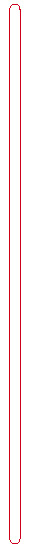
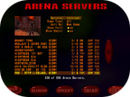
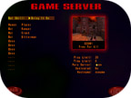

|
|||||||||||||||
|
|
|||||||||||||||
|  | |||||||||||||||
|  | |||||||||||||||
| Choose this option to join or create a game played over a network or via the Internet against live opponents. No matter how tough the opponents in a single player game are, there's no thrill greater than competing against other live players. When you select this option, a screen will appear where you can view, organize and join servers (computers hosting multiplayer games) running Quake III Arena. You can also select the Create option to start your own server. | |||||||||||||||
| Servers are other computers hosting multi-player games. The default setting is LOCAL. If your computer isn't part of a local network, you wont see any games displayed. At the top of this screen are five options to help you organize the servers that are displayed in the screens center window. Click on the word to the right to toggle through the options. They will automatically sort and filter the games available to you. The hi-lighted server name is your current selection. You can use the scroll bars on the right side of the server list window to see the complete list of servers available. To select another, click on the one you want to join and hit the FIGHT button on the bottom of the screen. |
|||||||||||||||
| Servers | |||||||||||||||
| Local: If your computer is part of a network, activating the LOCAL toggle will detect and display all the Quake III Arena games being run on it. Just click on the one you want to join and hit the FIGHT button on the bottom of the screen. If your computer isn't part of a local network, no games will be displayed. | |||||||||||||||
| Internet:If your computer link to the Internet is active, selecting this option will show you the servers available. If not, then none will be displayed. This listing also indicates the "ping" rate for each server. Ping is the amount of time it takes your computer to send and receive data to and from the server. The lower the ping rate, the faster your connection to that server will be. Its important to remember that, while a low ping rate is better for play, Quake III Arena is designed to run well even with higher ping rates. | |||||||||||||||
| Favorites: Clicking on this button will filter out any server not on your list of favorites (see below). If none of your favorite servers are running, or you haven't book-marked any favorites, you wont see any games displayed. To bookmark a favorite server, you must be playing the game in the desired server. Hit ESC to open the menu, then select Server Info. At the bottom of the server info, click on "Add to Favorites" and it will be done. You can also delete entries. | |||||||||||||||
| Game Type | |||||||||||||||
| Use this option to include only servers running the game type (All, free for all, tournament, team death match, or capture the flag) that you would like to play. | |||||||||||||||
| Sort By | |||||||||||||||
| This option sorts by the selected instruction. |
|||||||||||||||
| Ping Time: The lower the ping rate, the faster your connection to that server will be. Server Name: Alphabetically lists servers. Map Name: Groups the servers by
arena filename. Open Player Spots: Displays servers with more open player spots at the top of the list. Game Type: Groups the servers by which game type is currently being played. |
|||||||||||||||
| Show Full | |||||||||||||||
| Quake 3 Arena doesn't normally show you games that have reached their maximum number of players. Set this to ON, and the Arena Server menu will include them. | |||||||||||||||
| Show Empty | |||||||||||||||
| Ordinarily, Quake III Arena filters out games in which no one is playing from the list of Arena Servers. Activate this to display empty games as well as those with players already in them. | |||||||||||||||
| You will find five buttons at the bottom of the screen. | |||||||||||||||
| Back | |||||||||||||||
| Returns you to the previous menu. | |||||||||||||||
| Refresh | |||||||||||||||
| Hitting this button instructs the program to search the network, Internet or your favorites again and update the list of games available. | |||||||||||||||
| Specify | |||||||||||||||
| If there's a particular server to which you want to connect, you can do so by hitting this button. The program will prompt you for the exact Internet address of the host server and then connect you to it, if possible. | |||||||||||||||
| Create | |||||||||||||||
| Chose this option to open make a game that's open to network and Internet players. You'll be shown an assortment of arenas from which to
choose and then be prompted to provide the basic rules of engagement. On the first screen that appears, click the left/right arrows to view the arenas. Select an arena for the battle by clicking on it. Then click on and toggle through the game types: Free for All, Team Death Match, Tournament, or Capture the Flag. |
|||||||||||||||
|  | |||||||||||||||
| Bot Skill: This option allows you to set the difficulty level of any computer opponents that you have added to the server. | |||||||||||||||
| Player List: The player list on the left hand side of the screen allows you to specify how many total players can be in the game,
how many player slots will be occupied by computer opponents, and how many slots can be occupied by human players. To add open slots for players (up to 12) in the game, change them to computer opponents, or close slots (to limit the number of players), click on entries in the left hand column below the word "Human" (you). Four dots mean a closed slot. "Open" means a human player can join or a bot can be added from the Add Bot menu during the game. To select a computer opponent, click on the opponent's name area to add a new gladiator or to change the one there. You select the opponent from an array of small portraits. Accept locks in your choice. For team matches, you have you can toggle a player to be a red or blue team player. |
|||||||||||||||
| Frag Limit: Frags (or kills) are the usual measure of success in the Arena. Adjusting this value allows you to establish the number of frags required to win the match. Higher values result in longer games. | |||||||||||||||
| Capture Limit: For Capture the Flag games, the capture limit indicates the number of times the opponents' flag must be captured and taken to your base. | |||||||||||||||
| Time Limit: You can greatly change the dynamics of a scenario by adding a time limit. If time runs out before someone reaches the Frag Limit (see above), the player with the most kills wins. | |||||||||||||||
| Friendly Fire: When on, it means that teammates can injure and frag one another with their weapon fire. Traditionally, it is turned ON for Team Death Match and OFF for Capture the Flag. | |||||||||||||||
| Pure Server: (multi-player only option) This means that the game on the server and the games on connecting computers must exactly match. Any modifications running on the server must also be running on the connecting computers. | |||||||||||||||
| Dedicated: (multi-player only option) A dedicated server is a computer that ONLY runs the game. It does not run the game and allow a game to be played on it at the same time. Toggle between three settings. Chose "No" if you don?t want your machine to be a dedicated server. Otherwise, select LAN for a network connection or Internet for a game being played on the web. | |||||||||||||||
| Hostname: Enter the name you want to give your arena on this line. This is what other players will see when they search for available servers. | |||||||||||||||
| Fight | |||||||||||||||
| Begins the battle. | |||||||||||||||
|
|
|||||||||||||||